Body tracking
Tracks one player or an experimental pair in real time with your camera.
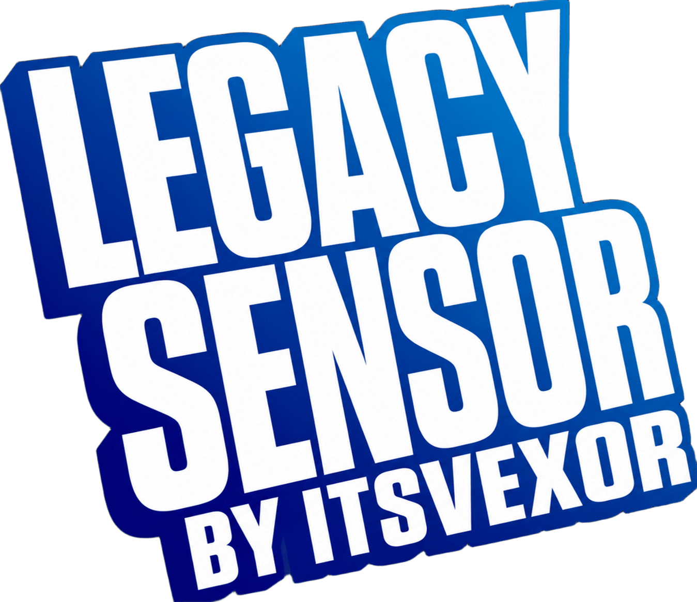
DownloadUse a regular webcam, virtual camera, or your iPhone as a Phone Sensor to play supported Just Dance Legacy titles without a Kinect.
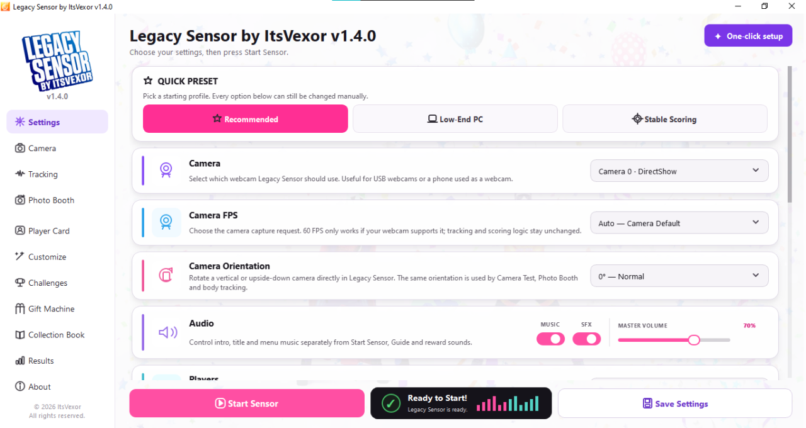
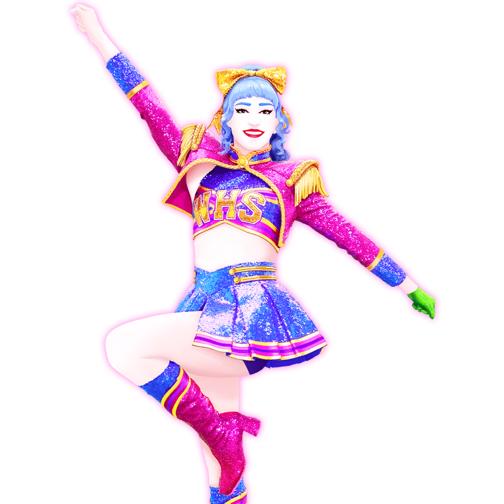
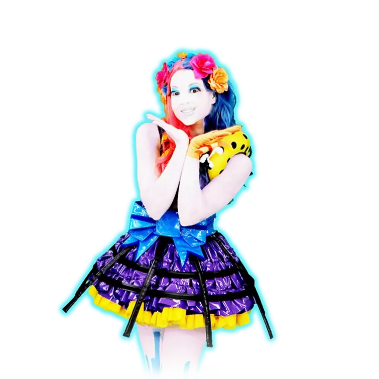
Tracks one player or an experimental pair in real time with your camera.
Built for consistent movement input in supported Legacy setups.
Unlock avatars, backgrounds, titles and Player Card stickers for your profile.
Take photos and decorate them with real app stickers and Coaches.
Complete permanent and daily coin challenges to earn XP, rewards and Legacy Coins.
Track your sessions, dance time, confidence and progression.
No Kinect setup maze. Pick your camera, start Legacy Sensor and jump into your supported Just Dance setup.
Built-in webcam, USB webcam or a supported virtual camera source.
Body tracking runs in real time while the app keeps your setup and progression together.
Use your moves in supported Legacy titles and keep building your Player Card.
The same colorful style carries through the whole app — from the animated startup screen to your tracking results, Player Card and unlocks.
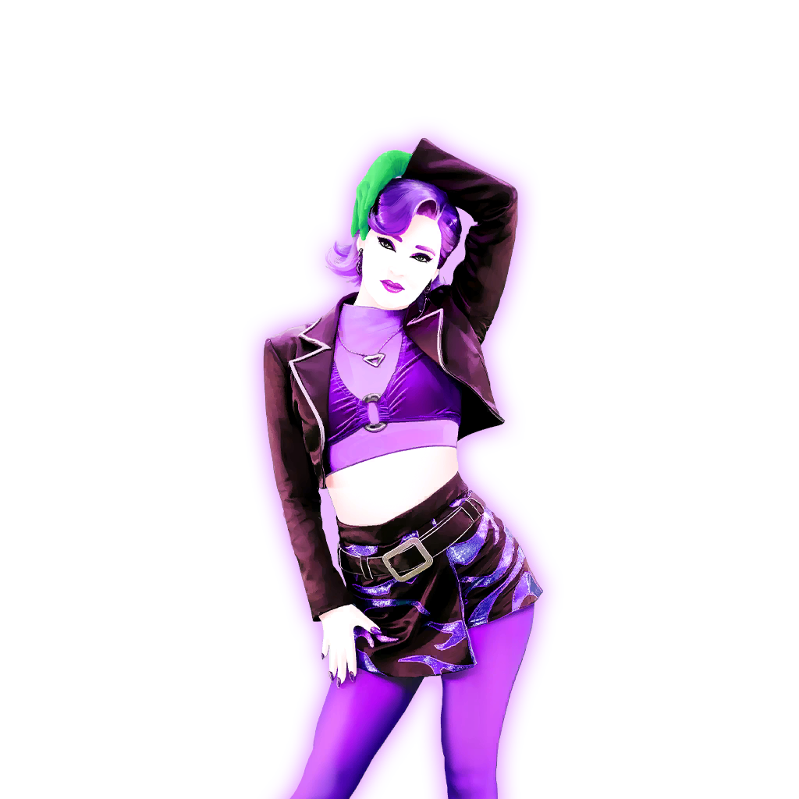
Choose camera FPS, camera orientation, audio levels and one-player or experimental two-player tracking.
Legacy Sensor running in supported Just Dance Legacy PC setups.
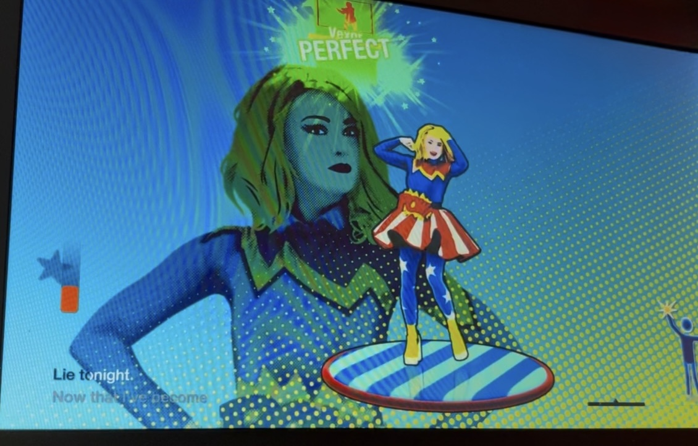
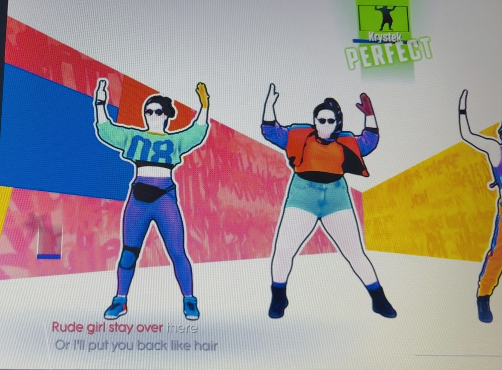
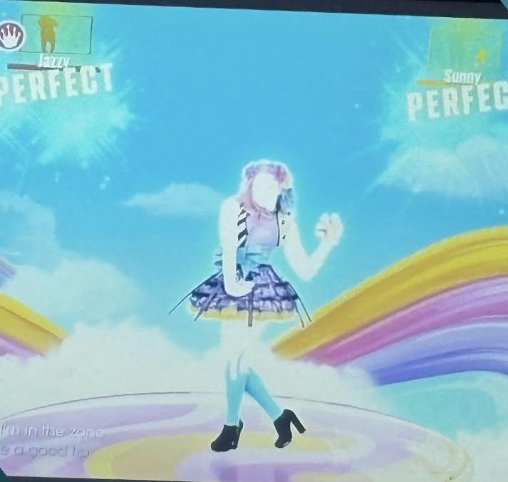
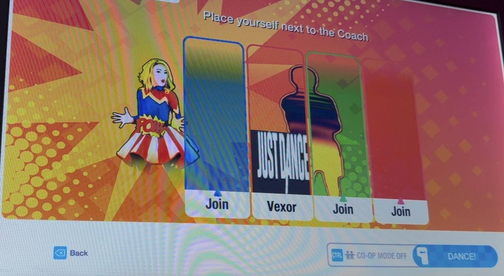
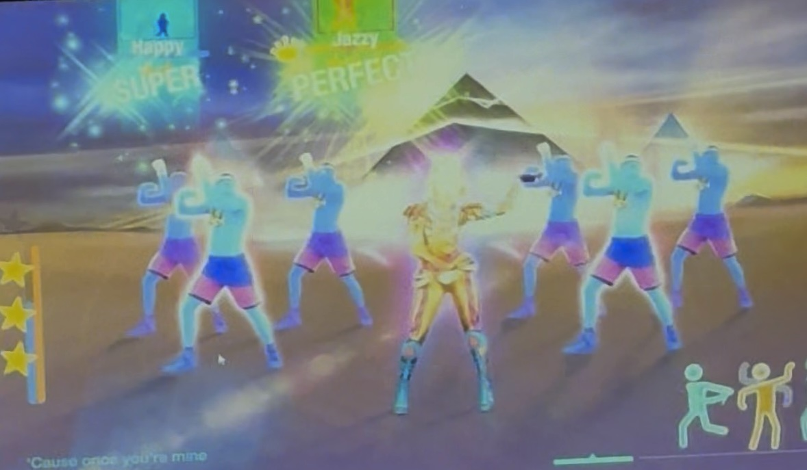
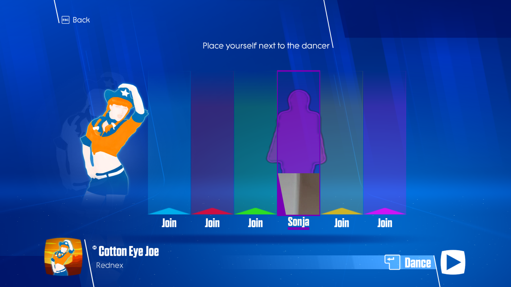
Legacy Sensor supports Legacy Just Dance by DieguinhoDG and also supports the Dreyn JD2021 BUILD project. Join their Discord servers for community, updates, help and more!
Join the official Legacy Just Dance Discord server for community, updates, help, events and more!
Join Discord DieguinhoDG ServerJoin the Dreyn JD2021 BUILD Discord server for updates, support, community and more!
Join Discord Dreyn ServerColorful Coach art and unlockable rewards carry the same playful dance energy through the whole Legacy Sensor experience.
Legacy Sensor keeps the app itself clean and simple while your Just Dance game stays front and center.
Phone camera tracking draws the same Kinect-style skeleton and a continuous body envelope, designed to stay attached to the player's movement.
Landmarks are sent as compact binary frames over a local WebSocket instead of streaming camera video to the PC.
The included Windows bridge writes the existing 20-joint shared-memory format used by the Legacy Kinect/FakeKinect10 path.
The biggest update yet — Legacy Sensor v1.5.0 Beta introduces the new Web App iOS / Phone Sensor, allowing your iPhone to work as a camera-based motion sensor for Legacy Just Dance.
⚠️ Beta Notice: Legacy Sensor v1.5.0 is still a Beta release, so bugs, tracking issues, connection problems or other unexpected behavior may occur. Just Dance 2021 by Dreyn is currently not supported in v1.5.0 Beta — support is already being worked on and a fix is currently in development.
More improvements and fixes are coming in future versions. ❤️ — Legacy Sensor by ItsVexor
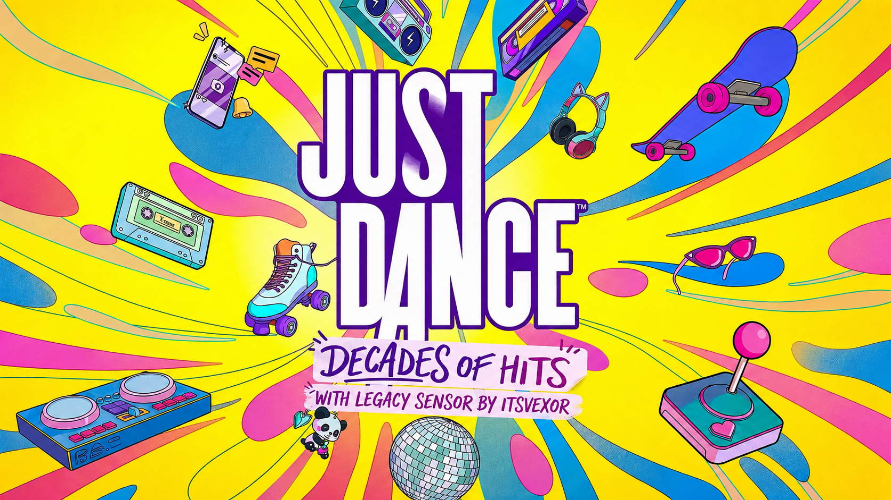
Older Legacy Sensor builds stay available if you need to go back to a previous setup.
Collection Book, Legacy Gift Machine, Legacy Coins and Daily Coin Challenges.
Download v1.4.0 BetaExperimental Two Players, Camera Orientation and Audio controls.
Download v1.3.0 BetaStable Single Player release with its own v1.2.0 Kinect10.dll files.
Download v1.2.0 BetaNo. Legacy Sensor is designed to use a webcam or supported virtual camera source for tracking.
Yes, if your phone-camera software exposes a virtual webcam source that Windows and Legacy Sensor can access.
Yes. Legacy Sensor is currently released as a free beta.
Legacy Sensor is made for supported Just Dance Legacy PC setups. Compatibility can vary by game and setup, so check the current release notes before playing.
Most standard Windows webcams should work, and supported virtual camera sources can work too. Camera drivers and virtual-camera software may affect compatibility.
Yes. Version 1.4.0 Beta keeps the experimental two-player mode. Performance depends on the PC, camera and game, so light latency or tracking glitches may occur.
Independent packaged apps can sometimes trigger reputation or heuristic warnings. Download Legacy Sensor only from the official project page and verify the signed executable before running it.
No. The public project page is static, so it can stay online without your PC running and serve the release ZIP as a normal download.
No. Legacy Sensor is an independent fan-made project by ItsVexor and is not affiliated with or endorsed by Ubisoft.